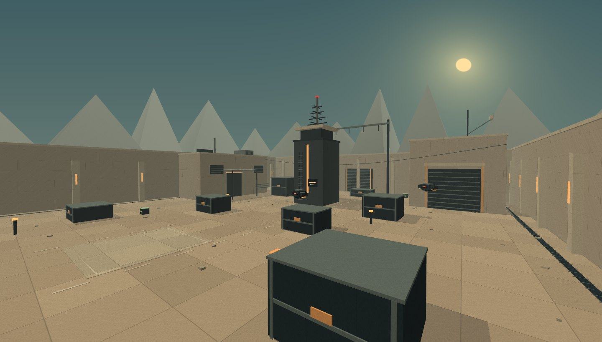

当前任务清除区域内的无人机
WAVE01 / 03剩余 4 架
N ··· 000 ··· E
×
正在换弹
+100HP
生命状态正常
SHIFT 冲刺R 换弹ESC 暂停
VX–24 / 突击步枪
24/120
AUTO 0000得分
任务已暂停
信号待命
准备好后，继续守住中继站。
按 Esc 暂停 · 点击继续后恢复鼠标瞄准
任务完成 / MISSION COMPLETE
中继站已肃清
所有无人机已清除，通信恢复。
0行动得分
0击毁无人机
0%射击命中率
0:00行动用时
行动手册 / FIELD MANUAL
操作与任务
清除三波无人机即可完成任务。红色弹丸可以躲避，建筑与箱体可以阻挡火力。
- W A S D
- 前后左右移动
- 鼠标移动
- 环视与瞄准
- 鼠标左键 / 空格
- 按住连续射击
- R
- 重新装填弹匣
- Shift
- 按住加速奔跑
- Esc / P
- 暂停或继续行动
+ 靠近绿色补给箱恢复生命，靠近橙色补给箱补充弹药。每波结束也会发放补给。
手机：左侧摇杆移动，右侧拖动瞄准，点击射击与换弹按钮。
场景暂时无法启动
请使用支持 WebGL 的浏览器，并开启硬件加速后重新打开。